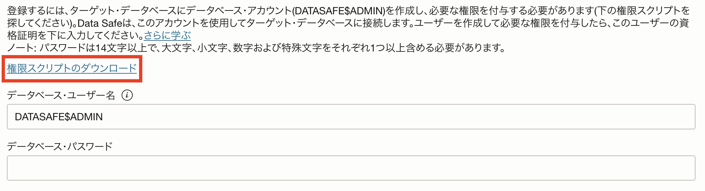
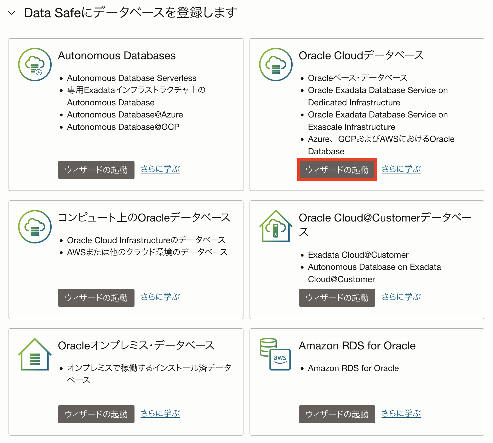
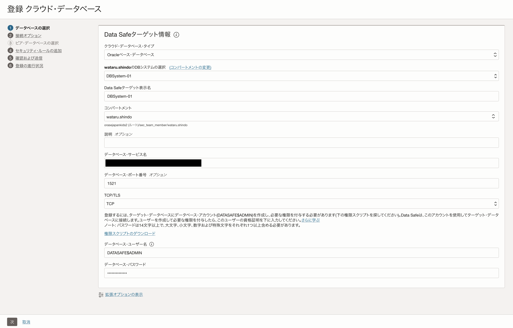
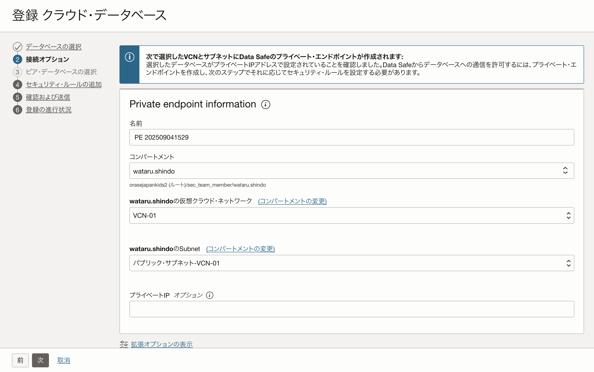
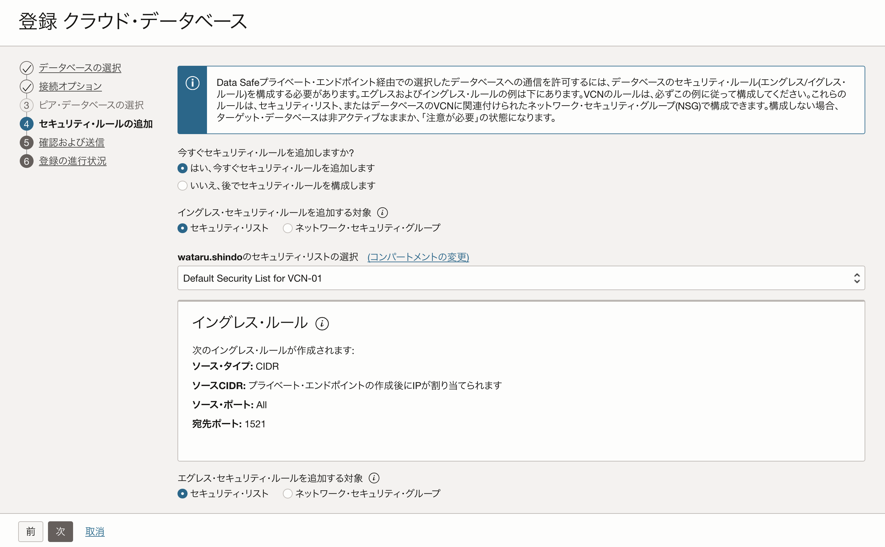
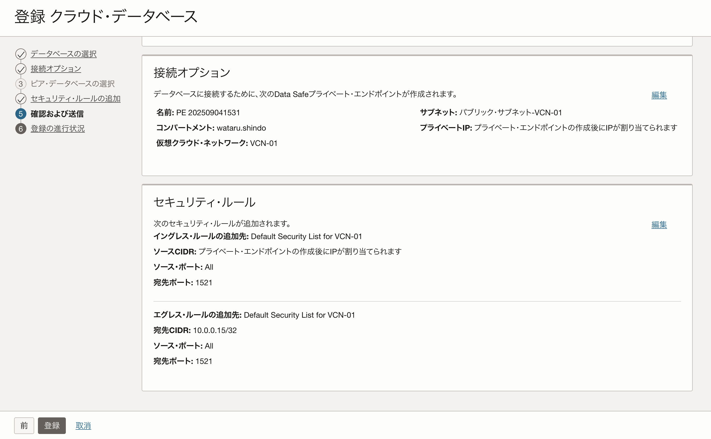
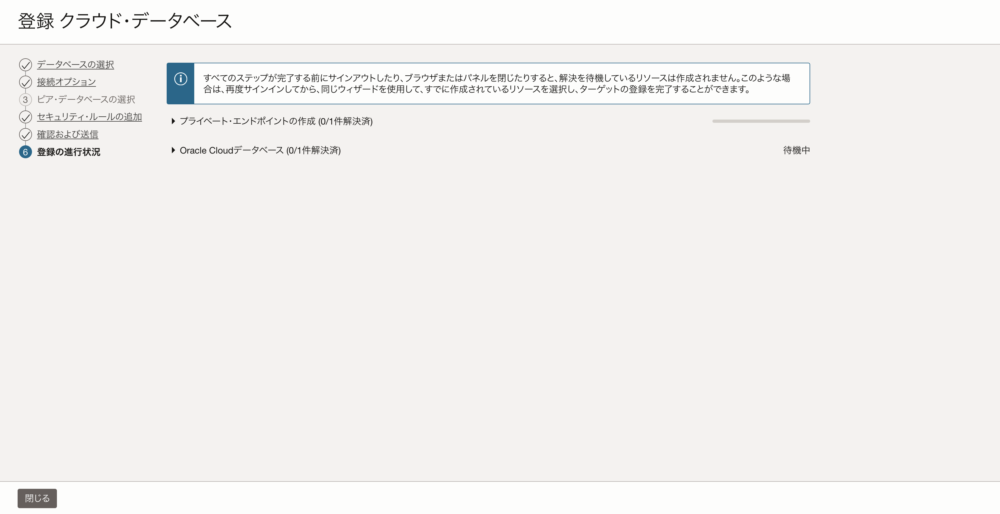
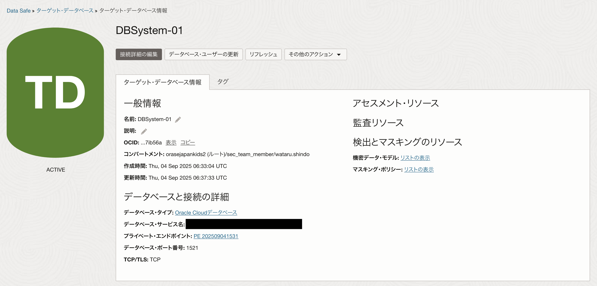
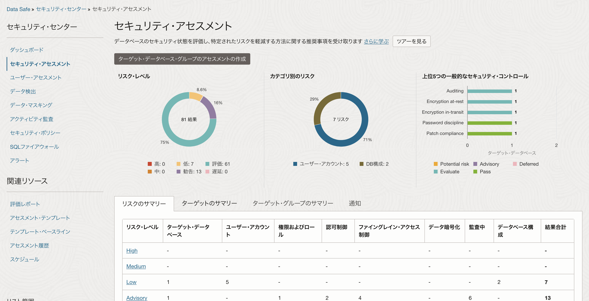

Oracle Data Safeは、Oracle Databaseのセキュリティを強化・補完するためのクラウドサービスです。 Data Safeを有効化すると以下の機能を利用することができます。
- セキュリティ・アセスメント
- ユーザー・アセスメント
- 機密データ検出
- データ・マスキング
- アクティビティ監査
- SQL Firewall（DBのバージョンが23aiのみ対応）
本手順ではBaseDBに対してData Safeを設定する手順をご紹介しますが、ExaDB-DやAutomomous Databaseも同様の手順で設定できます。
所要時間 :
- 約30分
前提条件 :
- OCIのBase DBが作成済み
Data SafeにBase DBを登録する
ユーザの作成
Data Safeに登録する際にPDBのデータベース・ユーザが必要です。 ユーザーの名前は自由ですが、OCIコンソールでの登録画面では DATASAFE$ADMIN ユーザー名がデフォルトでセットされてるため、この名前を使用して作成します。パスワードは14文字以上で、大文字、小文字、数字および特殊文字をそれぞれ1つ以上含める必要があります。 PDBにログインし、以下のSQLを実行します。
CREATE USER DATASAFE$ADMIN identified by "パスワード";
GRANT CONNECT, RESOURCE TO DATASAFE$ADMIN;
BaseDBの場合はOracleが提供しているスクリプトを実行することで、Data Safeの機能を利用するためのロールを付与または取り消しができます。このスクリプトはOCIコンソールの [メニューバー] → [Oracle Database] → [データ・セーフ - データベース・セキュリティ] と移動し、「ターゲットDBの登録」ボタンを選択した画面から入手できます。 
スクリプトファイルをDBサーバーに移し、以下のコマンドを実行します。
@datasafe_privileges.sql <DATASAFE_ADMIN> <GRANT|REVOKE> <AUDIT_COLLECTION|AUDIT_SETTING|DATA_DISCOVERY|MASKING|ASSESSMENT|ALL> [-RDSORACLE][-VERBOSE]
Data Safeの設定
ユーザの設定および権限の付与が完了したら、対象のデータベースにData Safeを設定します。 Data Safeの概要画面から、対象のデータベースの「ウィザードの起動」をクリックします。 今回はBaseDBに対してData Safeを設定するので、Oracle Cloudデータベースの「ウィザードの起動」をクリックします。 
以下の情報を設定し、「次」を選択します。
- DBシステムの選択 - 対象のDBシステム
- ターゲット表示名 - 任意の表示名
- コンパートメント - DBの存在するコンパートメント
- データベース・サービス名 - PDBのサービス名
- データベース・ポート番号 - デフォルトは1521
- データベース・ユーザ名 - 作成したデータベース・ユーザ名
- データベース・パスワード - 作成したデータベース・ユーザのパスワード

DatabaseとData Safeを接続するためのプライベートエンドポイントを設定します。すでに作成している場合は既存のプライベート・エンドポイントを使用してください。作成していない場合はこの画面から直接作成することができます。 作成していない場合は以下の情報を設定し、「次」をクリックします。
- 名前 - 任意の名前
- コンパートメント - DBの存在するコンパートメント
- 仮想クラウド・ネットワーク - DBの存在するVCN
- Subnet - 任意のサブネット

セキュリティ・リストまたはネットワーク・セキュリティ・グループを必要に応じて設定します。

最後に設定した項目を確認し、「登録」をクリックします。 
登録が完了すると、画面が推移しステータスが「ACTIVE」になります。  
Data Safeの設定が完了するとセキュリティ・アセスメントなど各種機能を利用できますので、是非試してみてください。 